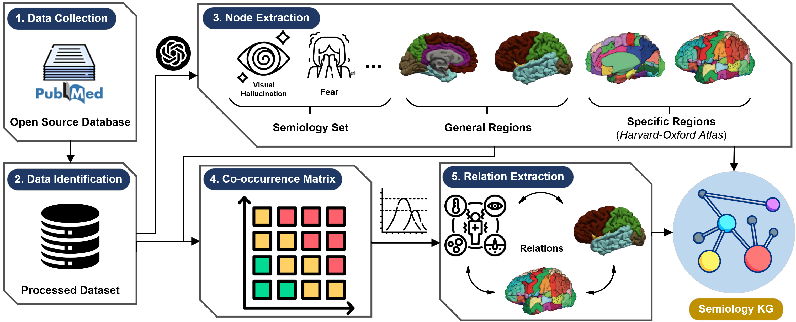
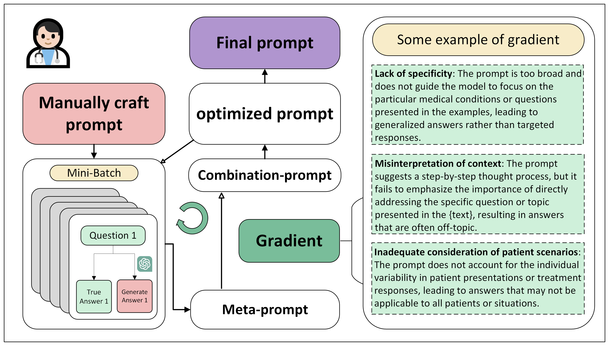

Publications
Papers sorted by recency. A complete record is also available in my CV.
Journal and Conference Papers
Knowledge graph representation of the mappings between seizure semiology and epileptogenic zones
Scientific Reports, 2026.

Overview of the data collection, node extraction, relation extraction, and semiology knowledge graph construction pipeline.
COVID-19 infection prediction using physical signs
International Conference on Cloud Computing, Performance Computing, and Deep Learning (CCPCDL 2022), SPIE 12287, 2022.
Manuscripts Under Review
Uncovering Epileptic Seizure Propagation Using Knowledge Graph-based Reinforcement Learning
Under review at IISE Transactions, 2026.
Thesis
Automatic Prompt Optimization for Medicine
Outstanding Bachelor's Thesis, 2024.

Illustration of the prompt optimization workflow, from manually crafted prompts to gradient-guided prompt refinement.
* denotes equal contribution where indicated in the original record.